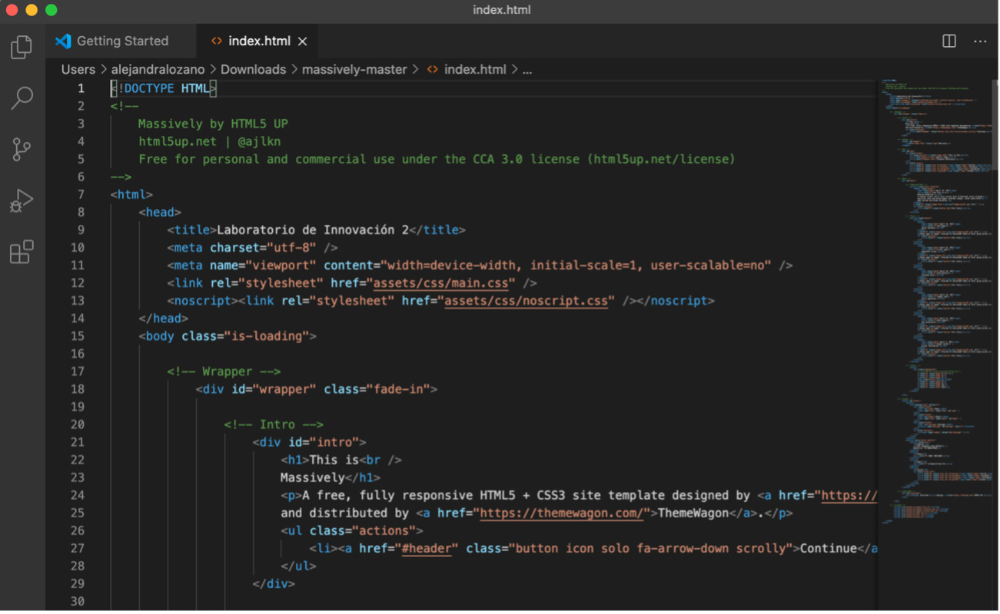
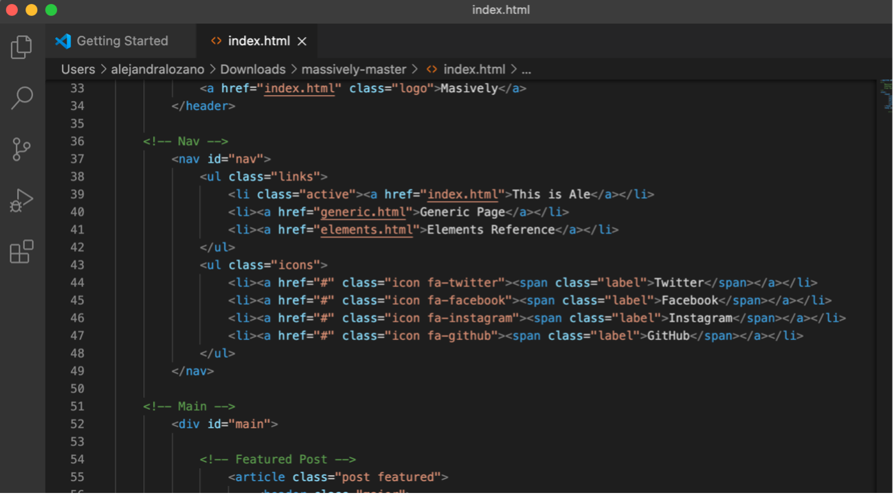
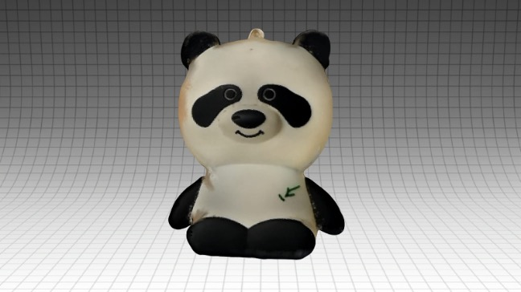
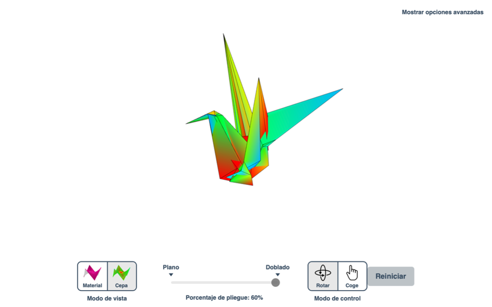
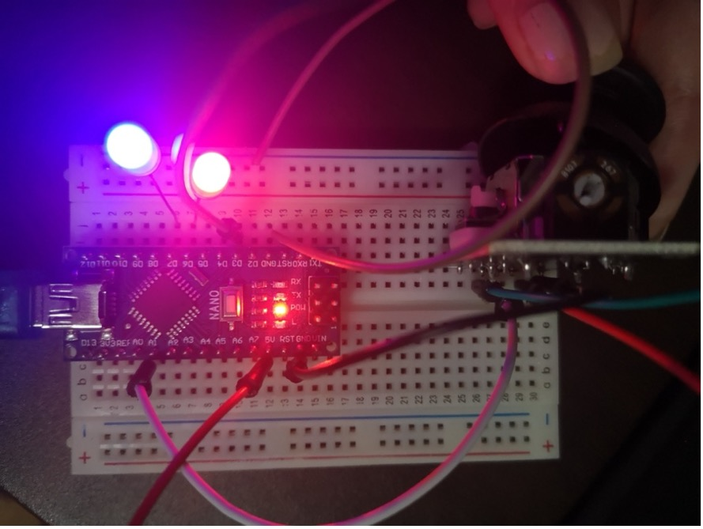

Alejandra
Lozano
Hola, soy Alejandra Lozano, estudiante de Dirección y Diseño Gráfico. Este espacio es una bitácora dedicada a mis procesos en el curso de Laboratorio e Innovación 2.
Hola, soy Alejandra Lozano, estudiante de Dirección y Diseño Gráfico. Este espacio es una bitácora dedicada a mis procesos en el curso de Laboratorio e Innovación 2.
La primera clase yo no estaba muy emocionada con el curso, no sabía de qué iba a tratar...
Llegué una hora tarde a clase porque me confundí con el horario...

La clase empezó con la presentación de avances sobre la elección de la plantilla de página web.

Esta semana edité todos los textos de la plantilla que elegí con información personal y contenido sobre mi.
Este día la clase empezó a las 4 pm, fue el ultimo día de revisión para los compañeros que aún no...
En esta sesión al fin pudimos usar la app Qlone, el procedimiento del scanneo en 3D era simple, pero...

La primera clase yo no estaba muy emocionada con el curso, no sabía de qué iba a tratar. Me sorprendí al inicio cuando mis compañeros comentaban sobre lo que habían hecho en el curso de Laboratorio 1, la mayoría mencionaba que había trabajado con arduinos, comentaron sobre un experimento del semáforo que solo ellos entendían. Por eso me sentí un poco perdida en el curso. Sin embargo, la profesora Silvana dijo que no había ningún problema con eso y que ella nos iba a enseñar todo, así que me calmé y seguí viendo de que trababa el curso. Sinceramenteme me pareció interesante el proyecto que vamos a hacer durante el ciclo, seguramente va a ser tedioso, pero me llama mucho la atención el tema de los robots, así que me gustó. Ese día elegí hacer el proyecto número 3, el robot que baila, ya que me pareció muy divertido cómo se movía.
Llegué una hora tarde a clase porque me confundí con el horario, yo estaba en mi escritorio tranquilamente avanzando una tarea y esperé hasta las 4pm, la hora en que pensé que empezaba la clase. No me sentí tan mal por eso, ya que almenos estaba haciendo algo productivo. Apenas ingresé al moodle, vi que decía de 3pm a 6pm, fue en ese momento que me di cuenta que estaba tarde. Entré a la clase y le dije a la profesora lo que había pasado y ella me respondió amablemente. Lo primero que hice, fue descargar el programa Visual Studio Code sin ningún problema. Aquí les dejo la prueba.

La clase empezó con la presentación de avances sobre la elección de la plantilla de página web. Me tomé el tiempo durante la clase para elegir la página que más me gustaba. Le pregunté a otras personas si sabían dónde descargar páginas web que se pudieran editar, ya que vi que a varios descargando del mismo lugar y tenían muchos problemas. Al final descargué dos páginas y empecé a hacer los cambios que iba mencionando la profesora. Esta es la página que elegí, tiene una linda imagen de fondo que se llega a visualizar al subir y bajar.
Y en esta parte es donde quiero incluir las bitácoras semanales.

Este es el html de la página web en Visual Studio Code. El cambio realizado en title con el nombre del curso “Laboratorio de innovación”.

Y esta otra parte, el área del menú ubicado dentro de Nav y una lista li “This is Ale”

Seguiré haciendo cambios dentro de la semana e iré pasando mi bitácora poco a poco.
Esta semana edité todos los textos de la plantilla que elegí con información personal y contenido sobre mi bitácora. Agregué fotos nuevas de pequeños robots en cada semana, les cambié el tamaño para que todas sean iguales y se vea ordenado.

Al dar click sobre el botón “seguir leyendo” continúa la historia. También visualicé cómo se verían los proyectos en una página aparte.
Este día la clase empezó a las 4 pm, fue el ultimo día de revisión para los compañeros que aún no habían presentado su avance de la plantilla de página web. Envié mi bitácora de la semana 4 que estaba pendiente y estuve esperando a que terminen las revisiones. Luego, la profesora nos mostró nuestras notas, yo estaba feliz con mi calificación. En realidad teníamos que hacer una nueva clase con la aplicación “Qlone” que la profesora nos había pedido descagar semanas atrás, además de nuestro papel impreso con el código respectivo, pero no se pudo por la cantidad de personas que aún faltaban por revisar y tenían muchas dudas por resolver.
En esta sesión al fin pudimos usar la app Qlone, el procedimiento del scanneo en 3D era simple, pero muy tedioso. Lo primero que hice fue buscar en el departamento todas los objetos que podía utiizar. El primero que elegí fue mi cargador portátil de pandita, lo coloqué sobre el código en la hoja impresa y empecé a scanearlo con ayuda de una bandeja giratoria que solemos usar para comer.
Este fue el resultado de mi primer intento.
Luego, intenté con una figura Dorbz de Dr. Strange, que me salió con un mechón extra en la cabeza.
El tercer objeto elegido fue uno de los juguetes de mi hamster.
En general, usar la app Qlone fue divertido y puso a prueba mi paciencia, ya que tenía que moverme lentamente. Después de esta primera experiencia, volví a escanear el pandita para conseguir un mejor resultado. Tomé una foto del objeto real como referencia para que se pueda ver el parecido.
Esta vez hice el escaneo del objeto en dos posiciones y quedé muy contenta con el resultado.

Luego, busqué nuevos objetos para escanear porque los que había usado antes no estaban dando un mejor resultado, los objetos me salían con la cabeza superpuesta y aplastada o con dos cabezas de terror.
Entonces el siguiente objeto elegido fue un otorongo de madera.
El resultado fue casi perfecto, ya que uno de los dedos de una pata no salieron, pero las texturas geniales.


Por último, decidí insistir con el escaneo de Dr. Strange.
Volví a hacer escaneos en dos posiciones, pero no funcionó así que me quedé con la posición en vertical con un exedente en el cabello que no pude eliminar. Pero me salió mejor que antes y se puede notar el detalle de su capa. Su cabello parece chocolate
A varios amigos les compartí lo que hice con la app y les gustó mucho. En el futuro seguiré usándola.
Hoy fue un día lleno de información sobre programas de modelado en 3D como Blender o tinkercad y sobre el “diseño paramétrico”. El concepto que más recuerdo es el que vimos en una entrevista en donde un experto explica en palabras sencillas, que el diseño paramétrico es una programación de distintas variables como el comportamiento o estilo de cualquier cosa que imagines de cualquier forma y que se amolde facilmente, que puede ser más inteligente que una contrucción común por sus meta materiales que podrían adaptarse a los cambios climáticos. También, exploramos la aplicación origami simulator, que permite simular cómo se doblará cualquier patrón de pliegue en origami. Elegí un origami de ave
Empecé a doblarlo hasta que quedó totalmente plano.
Revisé los puntos de tensión
Y lo deformé cogiendo diferentes puntos.

Por último, cambié el doble porcentaje a -69% para cambiar el grado del plegado en forma opuesta.
El objetivo de esta aplicación es mostrar el funcionamiento de los pliegues de las figuras con la posibilidad de agregar tus propios patrones de origami y un estudio de figuras en 3D sin necesidad de papel.

Un ejemplo de uso del diseño paramétrico se encuentra en el antiguo edificio de intercambio de diamantes en Ámsterdam, ahora llamado Capital C, el cual ha sido restaurado con la finalidad de volver a su diseño original. Además de esta restauración, se puede apreciar en la parte más alta del edificio una estructura espacial de techo de vidrio y acero diseñada por el renombrado estudio de arquitectos ZJA Zwarts & Jansma Architects. ¿Por qué se agregó este diseño a un edificio tan antiguo?

Como edificio y como institución, la Bolsa de Diamantes, construida en 1911 después de un diseño de Gerrit van Arkel había pasado por varias adiciones a través del tiempo, un incendio y varias renovaciones, por lo que gran parte del carisma original se había ido. Por esta razón, la última renovación tuvo 3 objetivos: 1. Restaurar las cualidades originales de la Bolsa de Diamantes en todo su esplendor. 2. Adaptar el interior para su uso como un entorno de oficina moderno y flexible 3. Construir una adición contemporánea abierta al público. Esa adición, un espacio para eventos y una terraza en el séptimo piso, bajo una cúpula oblonga.

Diseño técnico paramétrico: Se automatizó el diseño mediante el desarrollo de una herramienta paramétrica que podría convertir la compleja geometría básica en un modelo de producción detallado. El diseño fue diseñado paramétricamente hasta el último detalle y a partir de estos modelos se gestionaron las producciones. Al diseñar el proyecto paramétricamente, la construcción demostró ser no solo técnicamente factible, sino también rentable. Herramienta paramétrica: Representación esquemática de la construcción o geometría real: las líneas son las vigas y los puntos son las juntas, modelo hecho en Rhino.


Análisis estructural El sistema estructural y las cargas en la estructura se generan a través de un enlace paramétrico desarrollado internamente entre Rhino y RFEM a través de Excel.

De archivo a fábrica Toda la estructura del techo se produce de archivo a fábrica aplicando la técnica de producción CNC para la producción parcial de las piezas tubulares. Ventajas del diseño paramétrico • Se puede crear rápidamente un modelo completo de Inventor en solo cuatro horas, que se puede utilizar para la producción. • El modelo incorpora todas las instalaciones, como agujeros para iluminación, instalación de niebla de agua, fijación de vidrio y paneles acústicos. Pre-montaje La prefabricación de los marcos con una alta precisión permitió que el acero de la cúpula se ensamblara en solo ocho días.

Hemos visto en este caso, el paso a paso de cómo a sido aplicado el diseño paramétrico en la renovación de un edificio tan antiguo y tan importante que junto a la geometría y la ingenería hizo posible la producción de la cúpula de vidrio y acero. Con un diseño elegante y minimalista armado en poco tiempo y que además permitió ahorrar costos y así evitar cualquier contratiempo que suelen tener las construcciones.
Esta semana vimos un repaso de lo que se hizo durante el curso de Laboratorio e Innovación 1, respecto a conceptos de circuito eléctrico, movimiento de electrones, voltaje, resistencia y la ley de Ohm. El objetivo de aprender sobre el funcionamiento de la corriente eléctrica de forma básica nos va a servir para manipular correctamente los materiales y evitar accidentes en los proyectos que realizaremos en las próximas semanas. Al final de la sesión la profesora Silvana realizó un test con la aplicación Quizizz para evaluar cuánto estamos aprendiendo y este fue mi resultado.
Quedé en quinto lugar, creo que no me fue tan mal, tuve un par de errores, pero la mayoría de cosas las recordé y espero no olvidarlas en unos días.
Durante esta semana pude avanzar con mi página web, estuve buscando en internet formas para crear una nueva pantalla dentro del inicio al dar click en el botón Seguir leyendo.

El nombre de esta pantalla que debe aparecer es “featherlight” y lo coloqué dentro del JavaScript de mi archivo.
Luego, coloqué el contenido completo de cada semana de mi bitácora.

Edité el color de fondo, el tamaño de la caja y los márgenes del texto dentro del CSS.

Aún me quedan un par de cosas por agregar, seguiré avanzando el próximo fin de semana.
Esta clase usamos thinkercad para hacer una simulación de un circuito, que incluía un arduino, proboard, resistencias, led, etc. La profesora Silvana nos guió, mostrándonos paso a paso dónde debíamos conectar los cables y leds.
Luego, para que el circuito funcionase, colocamos un código con los números correspondientes a cada pin conectado. Al principio me confundí, mis códigos tenían muchos errores, había colocado todo en “LOW”, por eso no prendía el led.
En la noche de ese mismo día volví a revisar los códigos con más paciencia y coloqué HIGH donde me había indicado la profesora y finalmente los leds ya se encendían.
En la imagen se puede apreciar el LED encendido.
Eso fue todo por ese día, me hizo sufrir un poco (bastante), pero lo bueno es que pude entender y realizar el ejercicio.
Esta fue la semana más complicada para mi, trabajmos con el kit e hicimos una práctica que consistió en hacer prender un LED. Para empezar, tuvimos que buscar todas las piezas que necesitabamos para el ejercicio, conectarlas al arduino y a la laptop.
Luego, revisar si las entradas de nuestras laptops estaban reconociendo el arduino, varios de mis compañeros tuvieron que descargar un programa extra para poder continuar con la actividad. Una vez hecho esto empezamos a hacer la programación con un ejercicio previo.

Seguido de esto, colocamos el LED en el arduino y colocamos nuevos códigos para que el LED encienda.

Sin embargo, mi LED no prendió, hice varios cambios como mis compañeros, pero no daba resultado.
Al siguiente día con más paciencia volví a intentarlo, revisé otra vez las fotos y videos de mis compañeros que pudieron encenderlo e hice varias pruebas, y aún seguía sin funcionar. Por eso, le pedí ayuda a mi hermano, él lo revisó, pero tampoco pudo hacer que encienda de la forma en que estaba conectado. Tal vez algún cable no estaba bien, no lo sé ,y ya me había cansado de intentarlo. Así que pasé a un plan B, junto a mi hermano buscamos tutoriales de cómo encender un LED con arduino, hice paso a paso lo que decía el gringo del video y funcionó, el LED encendió. Aunque el ejercicio fue distinto al de la clase, yo estaba feliz porque al menos ya sabía que todo funcionaba bien. Lo siguiente que hice con la guía de mi hermano, fue seguir con ese mismo mecanismo y adaptarlo a la práctica de la clase. Ya que para conseguir que el LED encienda según el video del gringo, solo necesité de dos cables y no estaba usando el lrd. Mi hermano me dijo que los códigos de la profesora estaban haciendo otra acción con una condicional que también hacía que el LED prendiera. Entonces, lo siguiente que hice fue conectar el resto de cables en posiciones similares según la nueva posición de mi LED y como resultado el LED prendió. Fue un éxitoooo, en ese momento subí la foto de mi LED encendido al discord para que la profesora lo vea como evidencia de que pude hacer el ejercicio. Ella no dijo nada, pero yo estaba muy feliz.

Esta clase estuvo llena de ejercicios divertidos y tediosos al mismo tiempo, a su vez utilizamos varias piezas del kit que no habíamos visto antes. El primer ejercicio consistió en conectar el joystick al arduino y conseguir que dos leds enciendan al mover el joystick. Para comenzar conectamos todos los cables, leds y el joystick al arduino y luego colocamos el código para que funcione.

En el código solo se utiliza la variable “y”, que sería la orientación vertical del joystick, en donde el led azul debe encenderse si es que “y” es mayor a 1000, mientras que el led rojo debe encenderse si “y” es menor a 50.
Como se puede apreciar en la foto, solo pude conseguir que uno de los led, el de color rojo encendiera al mover hacia la izquierda el joystick. El led de color verde no llegaba a conectarse bien y no encendía, probé intercalándolos, pero después de varios intentos seguía sin funcionar. Por eso cambié el led verde y en su lugar usé el de color azul, estuve un rato acomodándolo bien y al final prendió.
Algo más que noté es que si presiono el botón del joystick se encienden los dos leds. Este ejericio me tomó tiempo hacer que funcionase, no me salió durante la clase pero después de un tiempo pude conseguirlo.

El segundo ejercicio consistió en reproducir una canción utilizando un buzzer, en este caso teníamos que conectar los cables al lado positivo y negativo del buzzer.
Seguido de esto debíamos usar el código de la canción que nos gustase, la profesora Silvana nos envió una larga lista de canciones en versión computarizada para elegir, y escogí la de Harry Potter. Al inicio yo había colocado las dos patas del buzzer en una fila, pero luego escuché que la profesora dijo que debían estar en diagonal y ya funcionó la musiquita tintintintin.

El tercer ejercicio fue una alarma que debía activarse al detectar a alguien cerca, para este ejercicio solo tuve que agregar el sensor que parecen ojos de robot y dos cables al arduino. Por último, colocar el código que active la alarma.

Este ejercicio fue bastante divertido, cambié las distancias para probar que tanto me detectaba y también le bajé un poco el volúmen porque sonaba bastante fuerte. Además, es bastante útil si no quieres que alguien se acerque a tu habitación, lo espantas solo con el sonido chillante.
En esta clase hicimos el ejercicio más complejo para mi, consistió en encender y apagar un led mediante aplausos utilizando un sensor de sonido. En primer lugar, conectamos todos los cables, el sensor y el led.
Luego, utilizamos dos códigos, uno de ellos era para probar el sensor de sonido y ver en qué nivel estaba y luego el código que hacía encender al led.


Al iniciar, ambas luces del sensor estaban prendidas, los primeros números que me aparecieron en la prueba llegaban a 1023.

Para que el ejercicio funcione una de las luces debe estar apagada y así pueda detectar el aplauso. Para conseguirlo giré el potenciómetro hasta llegar a 550 aproximadamente. Cuando lo intenté por primera vez pensé que mi sensor se había roto porque no veía ningun cambio, luego vi que el puerto de mi laptop se desconectaba y me salían errores. Entonces usé otra laptop, lo volví a conectar, pero los números seguían sin moverse. Después de un buen rato al fin pude apagar la luz, no sé si había manoseado demasiado el sensor y por eso no me salió antes o era solo un problema de contacto de los cables que pelé, ya que se salían por ratos sin que me
La última semana estuvo destinada al armado del robot siguiendo la guía del Otto DIY y también videos tutoriales para poder ver bien cómo se coloca cada pieza correctamente. Primero comencé entornillando los servomotores en los pies y en la base del cuerpo.

Coloqué el arduino nano en el shield, luego el sensor de ojos de robot y las pilas.
Conecté todos los cables y el buzzer. Seguido de esto puse la cabeza a presión. Revisé la guía de Otto y descargué el archivo zip de su página web, moví su librería y busqué los archivos de canciones. Probé con single ladies y smooth criminal, pero solo se movía la pata derecha. Entonces me puse revisar si había armado algo mal en esa patita, desarme casi todo y volvi a armar, revise el video que mandó la profesora por whatsapp para ver como se movían sus patitas al conectar y solo una de las patas de mi robot de movía en la posición inicial. No pude encontrar la razón por la que no funcionaba esa pata, aparentemente todo estaba en su lugar y fue así como quedó mi robot. Grabé un video de cómo se mueve para que la profesora pueda verlo y eso fue todo.